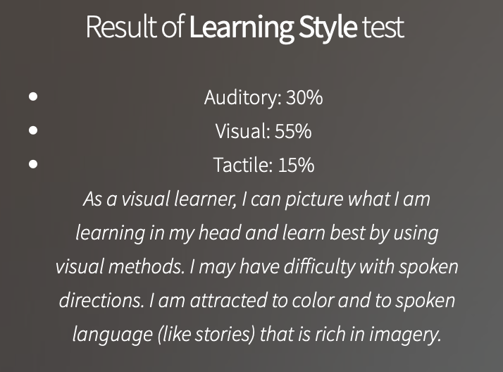
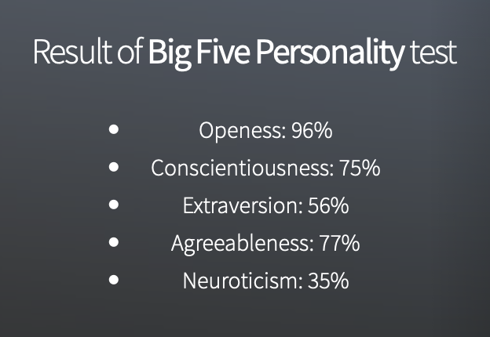
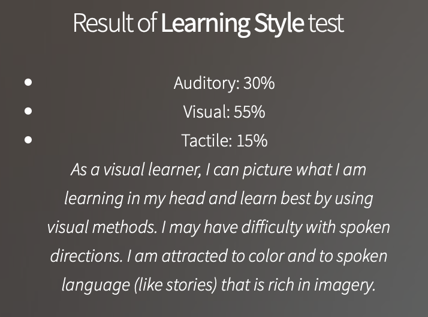
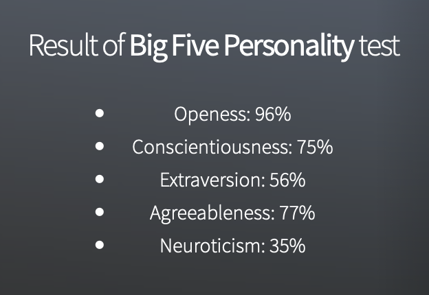

From the test result, I know that I am an extrovert, visual learner, and more suitable to work in an organised environment such as a librarian. To work as a team, I think I will be good at organising meeting, events, be the secretary who drops down everything about the company, etc. When forming a team, I will be looking someone creative and investigative, so that we can be a good team among others. Also, since I am good at organising; therefore, I will nominate myself to be the team leader and lead everyone to achieve the achievement at the end.
The tests definitely will influence my behavior in a team, because after doing the tests I knew more about myself, I knew my strengths and my weaknesses so that I can try to develop my strengths and improve my weaknesses. This makes me become a better behavior person in a team. When forming a team, to form a really effective team I will observe the personalities of the peoples and choose the right person that is hardworking and responsible. After forming a team, team members need to assign a team leader. A team leader not only needs to do his part of work in the project, but also always monitor the progress of the team members to make sure the project is on track, always have a discussion with team members like share concerns and project status on a regular basis.
These test could get more information about me so that I can recognize myself from other sides, so that I can improve myself overall. And I can make my decisions for my future more clearly. These results could help me to do better in a team, such as have good communication with my teammates or deal with the problems better in the team. When I form a team, the teammates should be willing to have communication with each others, it would be a good start for a team because good communication means less social problems happen in the team.
The results of these tests will significantly help me to make use of my strenghts in a better way in future in every facet of life. It creates self-awareness of my potential. These results will help me to work on my weaknesses as well. These results will motivate me to work on my goal and will also gide me to correct my weaknesses. These tests are the means of self-assessment and self-evaluation. Considersing the results of above tests, I have team work qualities. These qualities will help me to sync with the team and its work. The qualities of mutual understanding, problem-solving and creative skills will help us as a team to work effeciently and effectively. Listening thoughts and ideas of all team mates is an essential quality to work in a team.
est result says I am a visual learner, where I understand and remember things by sight. I learn best by using methods that are primarily visual. This shows that I should use learning methods such as using key words, ideas, or instructions with mind mapping will maximise my outcome in working environment. My test result shows that I am an adventurer who enjoys upsetting traditional expectations with experiments. Observant of others feeling and behaviour who enjoys connecting with different personalities but can be quite weak on harsh criticism. This conveys that I should have rather constructive ideals to base my goals on and work out goals that can create positive principles. I should draw limits on how much I can take on people and do not let emotion take control of situations I can face in team play.
These tests generally say that I have the personality of a "campaigner" meaning that I enjoy social situations, engage and relate well with other people. Learning style results show that I make some decisions based on what I feel while Creativity tests show that I do not always believe what is infront of me but rather boldly trying to satify my curiosity. Having good social and people skills can definitely be applied to building a good team to work with, as well as applying my best and creativity to mediate and resolve any issues while working with said team.

 


